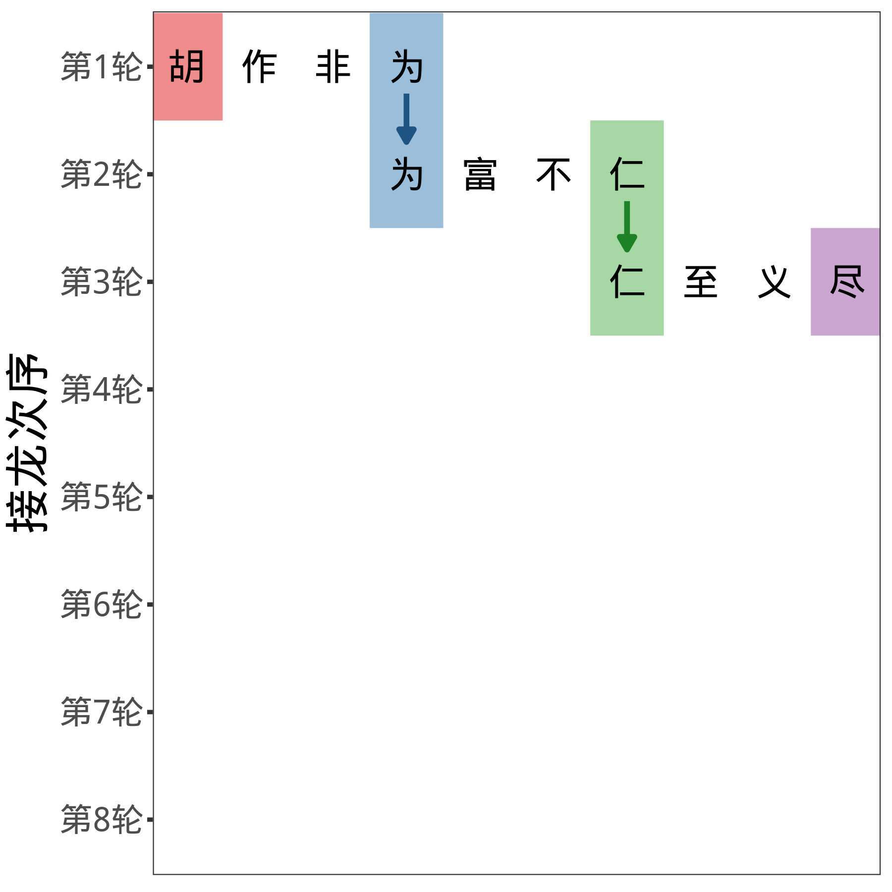
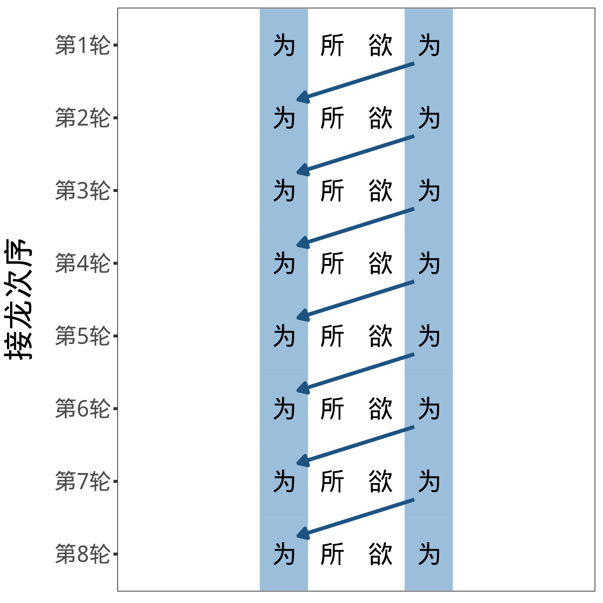

吃(蘸(涮(挤(捶打(切(宰(牛))), 成丸), 牛骨清汤), 沙茶))5 magrittr 管道
5.1 %>% 定义
在继续讲解 dplyr 函数前，我想介绍一个非常特殊的函数，来自 magrittr 包的管道（pipe）函数 %>%。 它的用途是连通函数，美化代码。
它的定义如下
f(a)等于a %>% f()f(a, b)等于a %>% f(b)f(a, b, c, ...)等于a %>% f(b, c, ...)
比方说，names(diamonds) 等于 diamonds %>% names()。
警告
从下一章开始，为了帮助大家养成习惯，我会把几乎所有的函数都写成管道 %>% 的形式。
5.2 %>% 优点
为什么要多此一举呢？在数据分析中，我们通常要用到大量的函数，比如我们要对一头牛做复杂的处理：
【错误】写法一
【错误】写法二
吃(
蘸(
涮(
挤(
捶打(
切(
宰(牛)
)
), 成丸
), 牛骨清汤
), 沙茶
)
)【正确】写法三（使用管道）
牛 %>%
宰() %>%
切() %>%
捶打() %>%
挤(成丸) %>%
涮(牛骨清汤) %>%
蘸(沙茶) %>%
吃()第三种写法，明显更自然，更清晰。原来这一系列函数，把牛变成了手打牛肉丸，下清汤锅，蘸沙茶酱，填了肚子——想必是在潮汕地区吃的。
提示
当我们有连续多个函数连在一起的时候，%>% 能让代码更加整洁、易读。
5.3 %>% 范例
任务：先把 price 放到开头，再对它降序排列（从高到低）
# 【错误】写法一
arrange(relocate(diamonds, price), -price)
# 【错误】写法二
arrange(
relocate(diamonds, price),
-price
)# 【正确】写法三，整洁、清晰、易读
diamonds %>%
relocate(price) %>%
arrange(-price)# A tibble: 53,940 × 10
price carat cut color clarity depth table x y z
<int> <dbl> <ord> <ord> <ord> <dbl> <dbl> <dbl> <dbl> <dbl>
1 18823 2.29 Premium I VS2 60.8 60 8.5 8.47 5.16
2 18818 2 Very Good G SI1 63.5 56 7.9 7.97 5.04
3 18806 1.51 Ideal G IF 61.7 55 7.37 7.41 4.56
4 18804 2.07 Ideal G SI2 62.5 55 8.2 8.13 5.11
5 18803 2 Very Good H SI1 62.8 57 7.95 8 5.01
6 18797 2.29 Premium I SI1 61.8 59 8.52 8.45 5.24
7 18795 2.04 Premium H SI1 58.1 60 8.37 8.28 4.84
8 18795 2 Premium I VS1 60.8 59 8.13 8.02 4.91
9 18791 1.71 Premium F VS2 62.3 59 7.57 7.53 4.7
10 18791 2.15 Ideal G SI2 62.6 54 8.29 8.35 5.21
# ℹ 53,930 more rows5.4 %>% 和 |>
在 R 4.1 的版本及以后，R 推出了所谓的自然管道（natural pipe）|>。它有三个优点，
- 比较简洁，仅使用了两个字符；
- 和 Julia 等编程语言统一了语法；
- 随时可用，使用前不需要导入 tidyverse, dplyr 或 magnittr 包。
鉴于上述优点，甚至 tidyverse 的奠基人 Hadley Wickham 都改用了 |>，几乎抛弃了 %>%。但是需要注意，|>也有很多缺点，具体什么我就不赘述了，你们以后遇到了自然知道。
就我个人习惯而言，我还是用 %>% 更多一点。而且我也更推荐初学者用 %>%，因为它更简单、更少报错。
5.5 为所欲为
我们已经学了一些 dplyr 函数。可以发现，几乎所有 dplyr 函数输入和输出的格式都是 tibble，这是一个非常精妙的设计。


章节 1.11 说到，想要学会成语接龙，学“为所欲为”是最省时省力的。同理，
笔记
- 使用 dplyr 函数，初学者可以“为所欲为”地处理 tibble。
- dplyr 函数非常适配管道函数
%>%。
下面是一个简单的证明：
代码
# 定义识别函数
read_object <- function(object) {
input <- substitute(object) %>%
as.character()
type <- type_sum(object) %>%
as.character() %>%
str_extract("^\\w+")
judgement <- str_glue(
"{input} 的类型是 {type}。"
)
return(judgement)
}read_object(diamonds) # 识别 diamondsdiamonds 的类型是 tibble。diamonds2 <- diamonds %>%
relocate(price)
read_object(diamonds2) # 识别 diamonds2diamonds2 的类型是 tibble。
提示
relocate() 输入 diamonds，输出 diamonds2，二者都是 tibble。
diamonds3 <- diamonds2 %>%
arrange(-price)
read_object(diamonds3) # 识别 diamonds3diamonds3 的类型是 tibble。
提示
同样，arrange() 输入 diamonds2，输出 diamonds3，二者都是 tibble。
值得一提的是，tidyverse 底下的其他包，通常也有“为所欲为”的性质：
| 对象 | 函数 | 例子 | |
|---|---|---|---|
| 成语接龙 | “为” | 特定成语 | “为所欲为” |
| 数据 | tibble | dplyr 函数 | arrange(), relocate() 等 |
| 图形 | gg | ggplot 函数 | geom_col(), ggtitle() 等 |
| 文本变量 | character | 部分 stringr 函数 | str_replace(), str_extract() 等 |
| 类别变量 | factor | 部分 forcats 函数 | fct_reorder(), fct_recode() 等 |
| 列表 | list | 部分 purrr 函数 | map(), map2() 等 |